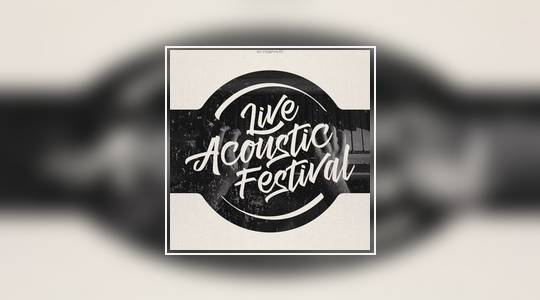
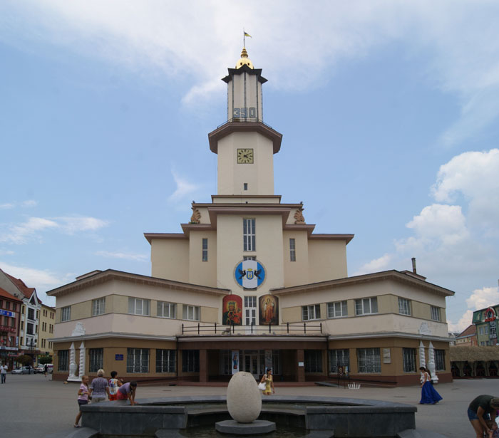
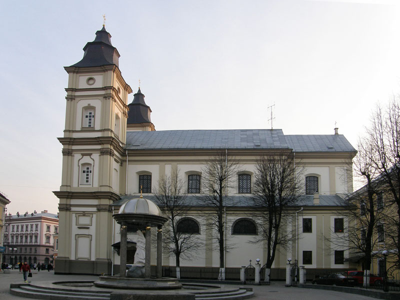
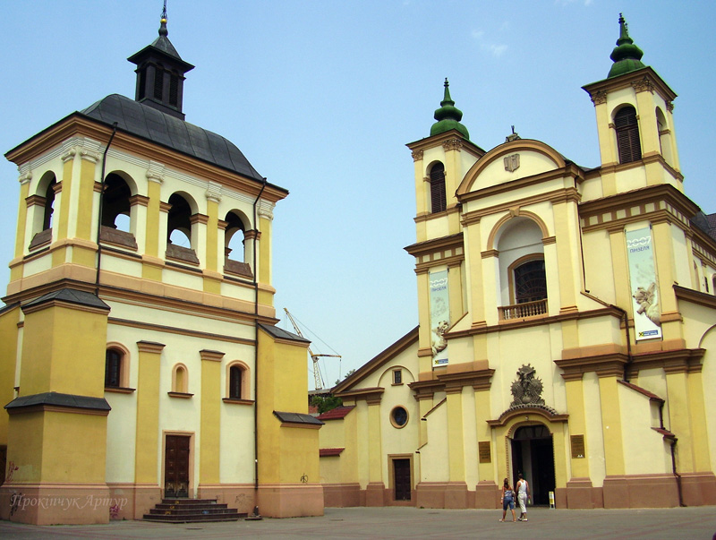
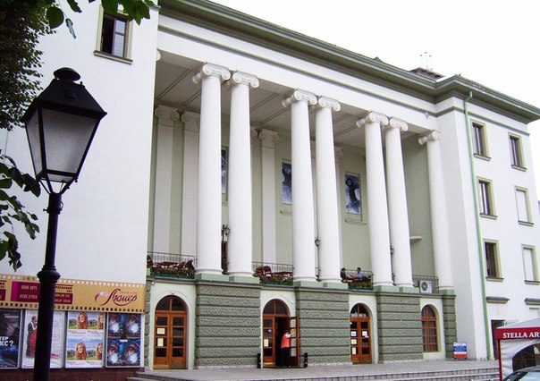
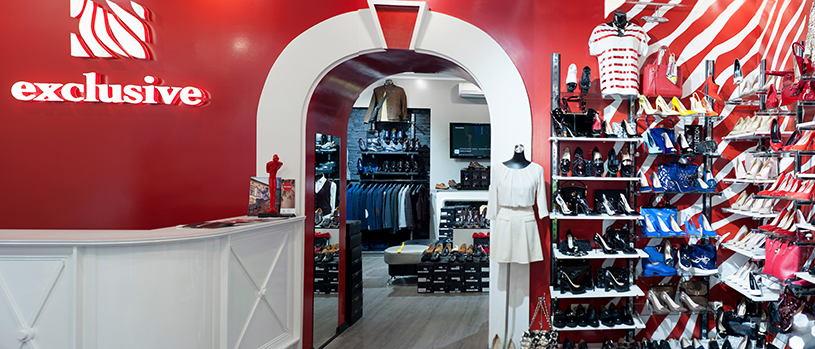
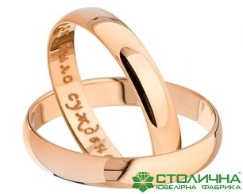

Події
21 травня
День вуличної музики
.jpg "event21")
В Івано-Франківську, як і в інших великих містах України, цієї весни знову відбудеться масштабне святкування Дня вуличної музики. В цілому, по Україні передбачається проведення Дня вуличної музики приблизно в 15 містах.
Франківчани та гості міста отримають можливість насолодитися вуличною музикою, відтак будуть звучати найрізноманітніші композиції, від джазу до хіп-хопу, від року до фолк-музики.
28 травня
Фестиваль Live Acoustic Festival

Захід об’єднає виконавців з різних міст України, які впродовж кількох годин даруватимуть публіці якісну українську музику. Фестиваль має на меті популяризувати українське, представити талановитих виконавців та зацікавити слухачів акустичними виступами. Даний захід буде цікавий як для молоді, так і для старшої публіки.
Архітектура міста
Площа Ринок

У 1675 році на площі Ринок тричі на рік проводилися великі ярмарки: починалися 7 травня, 8 вересня та 28 листопада і тривали, зазвичай, чотири тижні. Сповіщав про початок і закінчення ярмарку ратушний дзвін. На станіславську ярмарку приїжджали не тільки з навколишніх сіл та міст, — тут можна було почути німецьку, італійську, французьку, чеську, словацьку, угорську, татарську, турецьку, російську, білоруську, шведську та інші мови. Один-два рази на тиждень спеціально призначені люди перевіряли ваги та інші вимірювальні прилади в шинках та у перекупок і в ратуші ставили відповідні клейма. Без такого клейма торгівля заборонялася. Навколо ратуші знаходилось багато крамниць, лотків, складів. Так, у переписі Станіслава в 1720 році містяться відомості про 27 крамниць.
Площа Ринок — центральна площа в Івано-Франківську, історичне серце міста, характерне явище для середньовічної архітектури європейських міст.
Це єдина ратуша в Україні (а може й у світі), збудована в стилі модерн.
Собор Святого Воскресіння

Одна з найвідоміших пам’яток Івано -Франківська є греко-католицький собор Св. Воскресіння Христового, а раніше єзуїтський костел. Історія костелу досить цікава.
Сьогоднішня назва катедрального собору Святого Воскресіння була і у головної української церкви міста Станиславова від початку його існування та збудованої ще в 1601 році в с. Заболоття на місці теперішньої синагоги. Про неї згадував мандрівник Ульріх фон Вердум, який відвідав Станіславів у 1672 році.З 20 вересня 1899 р. по 17 грудня 1900 настоятелем собору, як єпископ-ординарій Станіславської єпархії був митрополит Андрей Шептицький. Храм було реставровано в 1835, 1885, 1995 та 2003 роках.
Костел Христа Царя (Івано-Франківськ)
.jpg "sob_rome")
Будівництво розпочалося у 1925 році і завершилося у 1932 році. В 1946 році костел замикають і він стоїть покинутий аж до 1954 року. В 1954 році його використовують як склад книг, а з 1947 році як склад одягу. В 1964 році влада вирішує перебудувати костел для спортивного комплексу для Івано-Франківської філії Львівської Політехніки, але на щастя цього акту вандалізму владі не вдалося здійснити і аж до 1989 року виконував функцію складу.
На сьогоднішній день це єдиний Римо-Католицький храм у місті. Будівництво розпочалося у 1925 році і завершилося у 1932 році.
10.12.2000р. архієпископ Мар’ян Яворський освятив відремонтований костельний орган, який 7 років тому привезли з Голландії. Нині до франківської парафії належить також Лисець.
Художній музей на майдані Шептицького (колишній костел Пресвятої Діви Марії та дзвіниця)

Колегіальний костел Пресвятої Діви Марії, Станіславська Колеґіата — найдавніший храм Івано-Франківська. Точна дата зведення костелу невідома. Засновник міста Анджей Потоцький розпочав зводити фортечні мури довкола міста, одночасно взявся за спорудження римо-католицького парафіяльного костелу. Йому допомагав старий приятель — пастор і капелан Войцех Бялачевський. Дерев'яна святиня постала досить швидко. Мабуть, на час надання місту Магдебурзького права уже існував зародок парафії, адже з 1662 року збереглася метрика хрещення сина галицького віце-старости Єжи (Юрія) Потоцького. Новозбудований костел носив ім'я Пресвятої Діви Марії, святого Андрія і святого Станіслава (єпископа краківського і мученика, патрона Станіслава «Ревери», батька Анджея), а також святої Анни (патронеси дружини Анни з роду Рисінських).
Сьогодні у костелі Пресвятої Діви Марії знаходиться Івано-Франківський обласний художній музей.
Палац Потоцького в Івано-Франківську

Палац Потоцьких в Івано-Франківську (тоді він мав назву Станіслав) заклали 1672 року. Він мав стати резиденцією галицького старости, коронного гетьмана Андрія Потоцького. Над палацом працювали два архітектори Ф. Корассіні та Д. Бенуа. Замок триповерховий, оточений оборонними валами і бастіонами, службовими будівлями та парком. Зараз гарно збереглась лише паркова огорожа та ворота.
Палац Потоцьких є пам’яткою архітектури та містобудування історичного значення. Комплекс палацу був збудований у 1672 – 1682 рр. (Його звів польський коронний гетьман Андрій Потоцький для себе і родини.) і добудовувася у 80 – их роках XX століття. Він використовувався спершу, як місце проживання власників Станиславова, а згодом впродовж десятиліть – як військовий госпіталь. У радянські часи тут знаходився військовий госпіталь.
Заклади культури
Академічний обласний музично-драматичний театр імені Івана Франка

У грудні 1939 р. виставою «Платон Кречет» О.Корнійчука розпочав свій I-й театральний сезон Станіславський музично-драматичний театр ім. І.Франка. Це був перший на Прикарпатті професійний український театр, створений на базі мандрівних театрів Галичини, що діяли в області під орудою директорів С.Крижанівського, Р.Войновича, Івана Когутяка, Ю.Кононіва.
Жива історія сьогоднішнього театру — заслужений артист України В. І. Родь, учень А. М. Бучми; народний артист України Ю.Суржа, народні артистки України Т.Перета, Ж. В. Добряк-Готв'янська; заслужені артисти України: Р. Л. Держипільський, О. Г. Шиманський, В. В. Пантелюк, Г. В. Бабинська, О. С. Іваницька, С. Б. Якубовський, Г. О. Талалай, Н.Романова, В.Юрців, В.Шиманська-Мартинова; головний художник заслужений діяч мистецтв України О. В. Семенюк, заслужений працівник культури України, асистент режисера С. Ф. Павліська.
Театр Кіно «Люм’єр»

Відпочинковий комплекс в Івано-Франківську відкритий в червні 2006 року. Кінотеатр Люмєр Названий на честь родоначальників кінематографу, братів Люм’єр. Що в перекладі з їх рідної французької значить світло.
Чотирьох поверховий будинок кінотеатру зведений в стилі, останньому із великих, — Арт Деко у 1929 р. Характерними ознаками стилю є: глянець та металевий блиск, використання фактурних поверхонь і орнаментів древніх культур. В цьому ж стилі виконаний інтер'єр. Головною прикрасою фасаду будинку є вісім 10-ти метрових колон, які є частиною стіни від другого поверху до даху.
Екскурсії
Академічний обласний музично-драматичний театр імені Івана Франка
У грудні 1939 р. виставою «Платон Кречет» О.Корнійчука розпочав свій I-й театральний сезон Станіславський музично-драматичний театр ім. І.Франка. Це був перший на Прикарпатті професійний український театр, створений на базі мандрівних театрів Галичини, що діяли в області під орудою директорів С.Крижанівського, Р.Войновича, Івана Когутяка, Ю.Кононіва.
Театр Кіно «Люм’єр»
Відпочинковий комплекс в Івано-Франківську відкритий в червні 2006 року. Кінотеатр Люмєр Названий на честь родоначальників кінематографу, братів Люм’єр. Що в перекладі з їх рідної французької значить світло.
Активний відпочинок
Клуб активного відпочинку "ВАРТА"

Нарешті і в Івано-Франківську з'явився пейнтбольний клуб тактичного спрямування! Ви запитаєте чим ми відрізняємось від інших Не тактичних клубів? Відповідь дуже проста і скориставшись нашими послугами ви самі її для себе отримаєте! Тим хто не вірить нам на слово, пропонуємо декілька головних відмінностей що якісно нас відрізняють від конкурентів! Головна відмінність це звичайно ж люди! Пейнтбол в Івано-Франківську для нас це не бізнес, а перед усім хороший відпочиннок на природі від буденності, спосіб відпочити морально, випробувати себе на міцність, перед тим як вирости в клуб ми зростали командою, пейнтбол для нас це стиль життя, тому ми знаємо толк в цій справі, ми її любимо і найперше що хочемо зробити, це поділитись позитивними враженнями які дарує цей новий, імпортний для нас, вид відпочинку.
Шопінг
Exclusive. Магазин одягу

"Exclusive" - це мережа магазинів чоловічого та жіночого одягу, взуття та аксесуарів. У магазині можна знайти речі італійських та турецьких виробників. Окрім того, відбувається розробка власного брендового одягу нової торгової марки "Stefano Lompas". Красиве життя - це красиві думки. Тільки такі думки приходять, коли Ви завітали в магазин "Exclusive". Стильний одяг та взуття, ексклюзивні аксесуари і ввічлива увага. Робити покупку тут зручно, легко та приємно. Удосконалювати тільки високу якість, виходячи за рамки можливого, втілювати, в життя мрії своїх клієнтів - це повсякденні завдання, які ставить пред собою "Exclusive". Обслуговування в магазині "Exclusive", на самому високому рівні. Молодий та цілеспрямований колектив, завжди готовий розповісти клієнту про останні модні тенденції і допомогти створити неповторний образ і попрацювати над іміджем вцілому.
Столична Ювелірна Фабрика

Сьогодні "СТОЛИЧНА ЮВЕЛІРНА ФАБРИКА" займається серійним виготовленням ювелірних виробів з дорогоцінних металів класичного сучасного і індивідуального дизайну зі вставками з штучних і всіх видів напівкоштовних і дорогоцінних каменів. Актуальний дизайн та творчий підхід, висока якість і сучасні технології, нові інвестиції і професійний менеджмент - запорука успіху Компанії на ювелірному ринку. Фахівці "СТОЛИЧНОЇ ЮВЕЛІРНОЇ ФАБРИКИ" особливу увагу приділяють розширенню модельного ряду. Визначальним фактором у цьому служать побажання наших покупців і світові тенденції в ювелірній галузі. Пріоритетами в роботі Компанії завжди були ціна і якість продукції. Адже кожна прикраса має приносити радість його власникові. Цінова політика відповідає якості продукції, що випускається, так як всі етапи, від створення дизайнерського ескізу до продажу готового виробу в магазині, зосереджені в рамках однієї організації. При цьому здійснюється постійний контроль якості як матеріалів, так і готових виробів.

{kind=link}
{kind=link}
{kind=link}
{kind=link}
{kind=link}
{kind=link}
{kind=link}